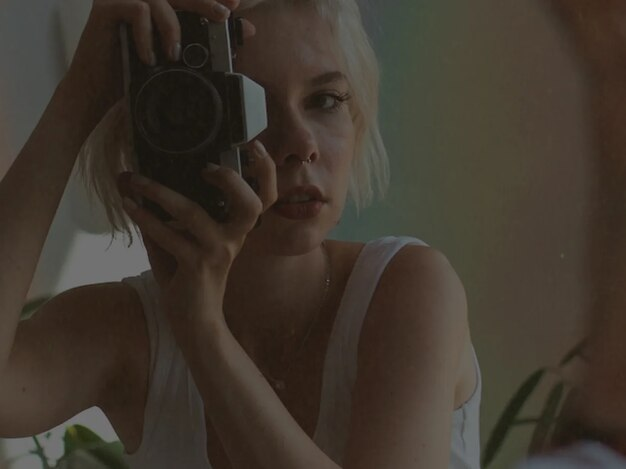

Imagem usando maps - seta coordernadas da imagem para criar links na propria imagem.
<hr>


<map name="workmap">
  <area shape="rect" coords="34,44,270,350" alt="Computer" href="gato.jpg">
  <area shape="rect" coords="290,172,333,250" alt="Phone" href="paisagem.jpg">
  <area shape="circle" coords="337,300,44" alt="Coffee" href="sol.jpg">
</map>